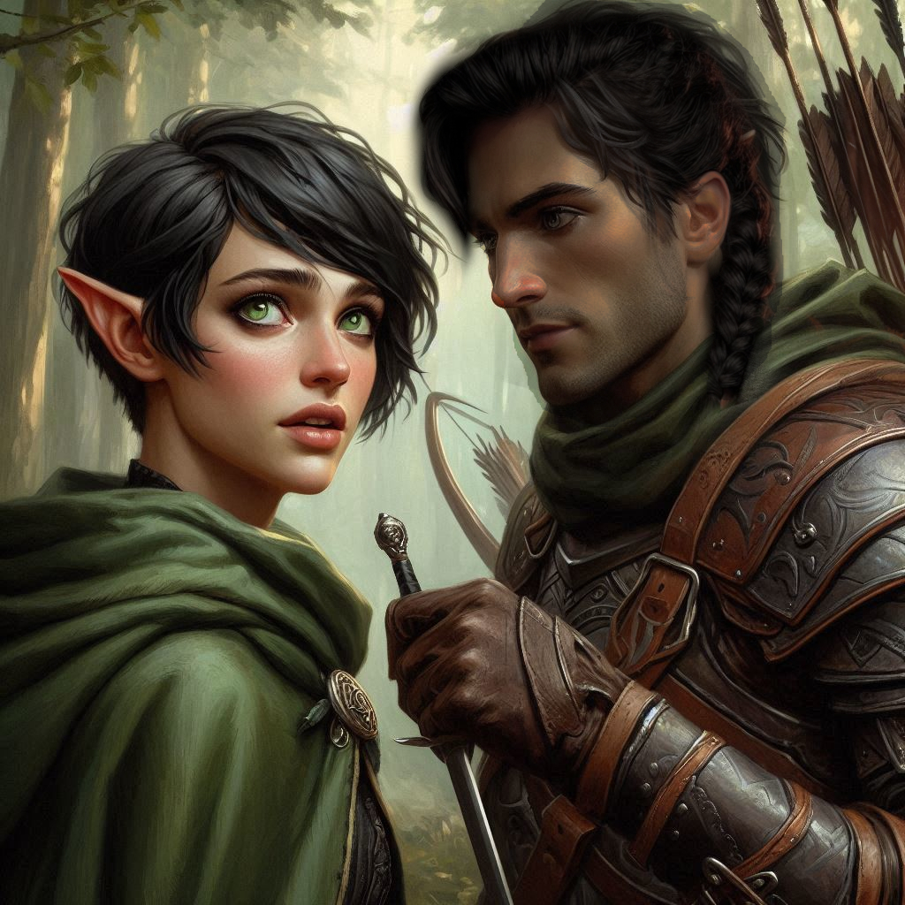

The Royal Entanglement
Your heart pounds as you grip the hilt of your sword, circling Princess Hawthorn in the dim glow of the cavern entrance. The air is thick with tension, the scent of damp earth and iron filling your lungs. Hawthorn’s golden braid swings behind her as she shifts her stance, her emerald eyes locked onto yours.
“You don’t understand what’s at stake, Kira,” she says, her voice low and dangerous. “Step aside.”
You tighten your grip. “I can’t let you go, Princess. You’re a traitor to the crown.”
“Foolish girl,” she says, her voice low and dangerous. “I am the crown.”
You swallow your fear. “You've betrayed everything the crown stands for.”
Hawthorn smirks. “Then come and take me.”
She lunges. You barely deflect her first strike, the clash of steel ringing through the cavern. She’s fast—faster than you expected—but you’ve fought trained warriors before. You pivot, dodging her next thrust, and counter with a quick slash toward her ribs. She twists away at the last second, her cloak billowing as she spins, bringing her dagger up in a deadly arc.
You parry just in time, the force of her blow rattling up your arm. She’s skilled, but you can see the frustration creeping into her movements. She expected you to be an easy fight.
Not today.
You feint left, then dive right, sweeping her legs out from under her. She hits the ground hard, rolling to regain her footing, but you’re faster. You drive your boot down onto her wrist, sending her sword skittering across the stone floor. Hawthorn hisses in pain, reaching for her dagger, but you’re already on her. You press your blade to her throat, your breath coming fast and heavy.
“It’s over,” you say. “Surrender.”
For a moment, you think she might spit in your face, but instead, she exhales sharply and goes still. “Fine,” she mutters. “You win.”
You pull a length of rope from your pack and bind her wrists, securing the knots tight. She glares at you, but there’s something else in her eyes now—respect, perhaps, or something more dangerous.
The moment is broken by the sound of footsteps echoing through the cavern. You look up to see Elias emerging from the shadows, his bow slung over his shoulder. His expression is grim.
“Kira,” he says. “We’ve got a problem.”
You frown. “What is it?”
“A troop of the royal guard is camped close to the entrance. They’ll come for the princess soon.”
You glance down at Hawthorn, then back to Elias. This mission just became even more complicated.
Hawthorn tilts her head. “If you untie me, I could help.”
You snort. “Not a chance.”
Elias steps closer, lowering his voice. “We don’t have time to argue. We need to move.”
You nod, pulling out the map you took from Hawthorn. It details two possible routes: one is a dangerous shortcut through the Nest of Stingers, rumored to be filled with dark elf traps and treacherous terrain. The other is a longer, safer route that will take you dangerously close to Varis’s territory. Either way, time is running out.